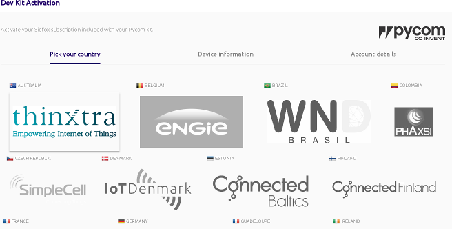
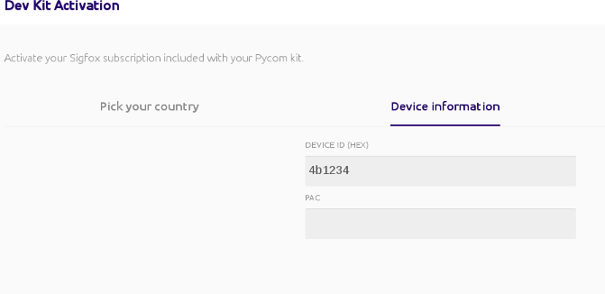
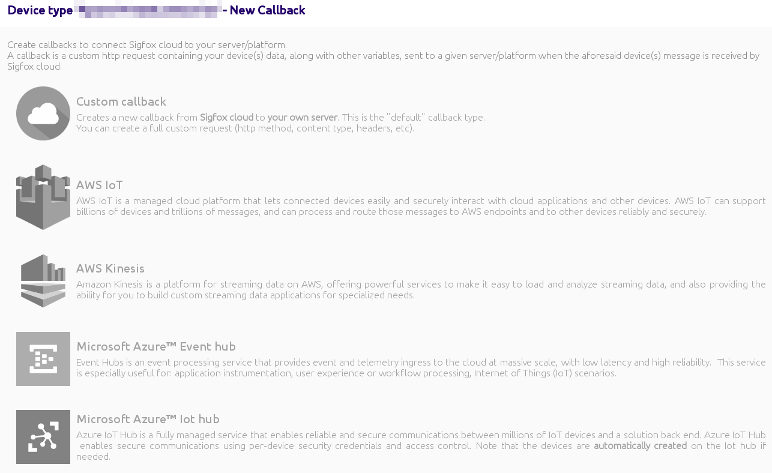
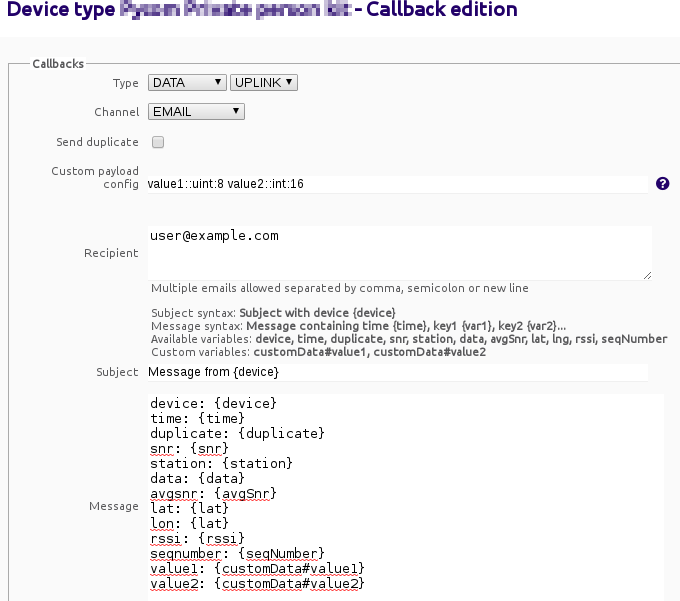

Sending a Sigfox message
Sigfox
Sigfox (Wikipedia) is a French company that provides an IoT Connectivity Service based on the Sigfox technology. It partners with other companies to operate LPWAN (Low-Power-WAN) networks in currently 32 countries. As a LPWAN protocol Sigfox trades throughput for low-power consumption and long-battery life. Uplink messages can carry a pay-load of up to 12 bytes and there is a limit of at most 140 messages transmissions per day. The latter is a regulatory limitation of the ISM band it uses. The official Sigfox standard doesn't seem to be publicly available but there is an Internet Draft which provides some insights.
Registering the device with Sigfox
Before one can send messages through the Sigfox network on has to first register the hardware with the local Sigfox network provider on the online activation page. Development kits "come with an included subscription to the full Sigfox service" (Source). In my case I had to select pycom as the kit provider and Thinxtra as the Sigfox network operator in Australia.

Detailed instructions for registering the SiPy can be found on the Registering the SiPy with Sigfox page.
The Python script below will display the Device ID and PAC which must be entered during registration.
>>> import network, binascii
>>> sigfox = network.Sigfox(mode=network.Sigfox.SIGFOX,
... rcz=network.Sigfox.RCZ4) # RCZ4 = Asia-Pacific
>>> print(binascii.hexlify(sigfox.id()))
b'012345678'
>>> print(binascii.hexlify(sigfox.pac()))
b'0123456789abcdef'

Sending a Sigfox message
Sending data through the Sigfox network is well described in the manual page of the Sigfox Python class. The example below sends 3 bytes of payload.
>>> import socket
>>> from network import Sigfox
>>> sigfox = Sigfox(mode=Sigfox.SIGFOX, rcz=Sigfox.RCZ4)
>>> s = socket.socket(socket.AF_SIGFOX, socket.SOCK_RAW)
>>> s.setsockopt(socket.SOL_SIGFOX, socket.SO_RX, False) # Don't expect downlink msg
>>> s.setblocking(True)
>>> s.send(bytes([0,127,255]))
3
>>> s.close()
The Sigfox Backend
The Sigfox network will receive the message but not do anything with it unless one configures a callback. Typically one would forward the message for processing. At the moment there are pre-configured templates for Amazon Web Servicess and Microsoft Azure as well as the option to create a custom callback.

For debugging purposes one can simply create a custom callback that will decode the Sigfox message and send the decoded data as an email as shown below.

The resulting email body would look like shown below. Note how the second and third byte were interpreted as a 16-bit unsigned integer. The latitude and longitude (of the receiving basestation) are always rounded to the nearest integer and are therefore of limited use. The timestamp is in Unix epoch, i.e. seconds since 1-Jan-1970 which will probably be within 1 or 2 seconds from when the message was originally sent. I didn't actually test this!
Device: 4D1234
Time: 1498034856
Duplicate: false
SNR: 40.54
Station: 2322
Data: 007fff
AvgSnr: 40.89
Lat: -38.0
Long: 145.0
RSSI: -103.00
SeqNumber: 4
Value1: 0
Value2: 32767